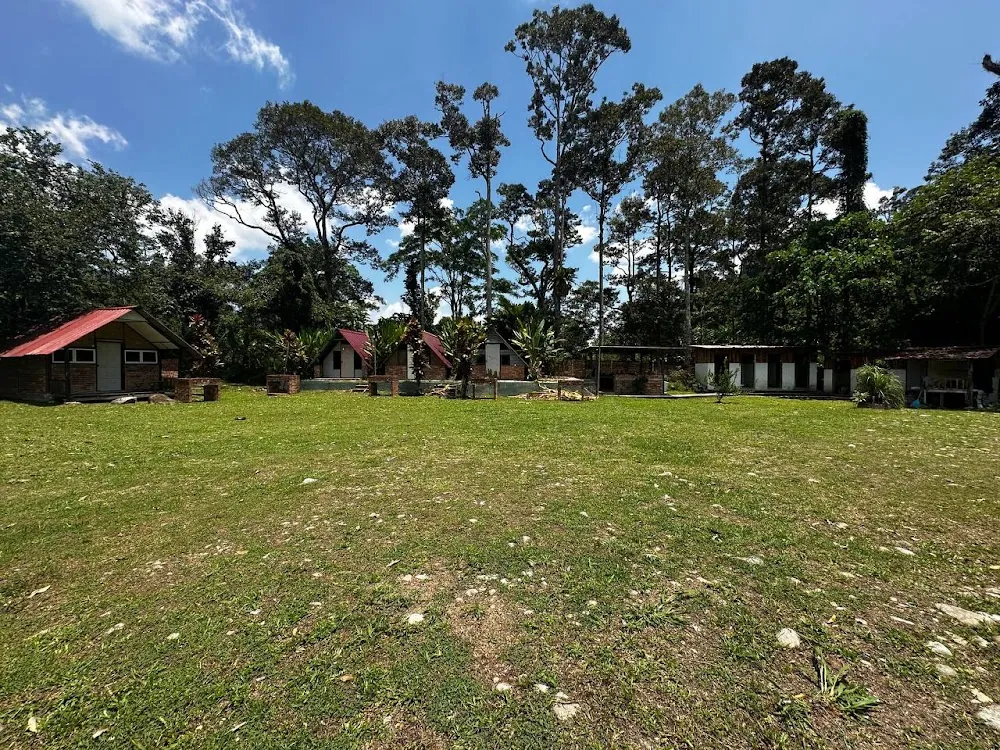
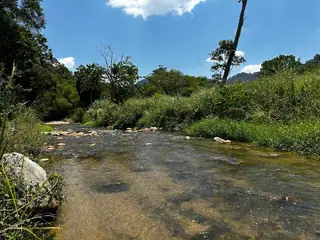
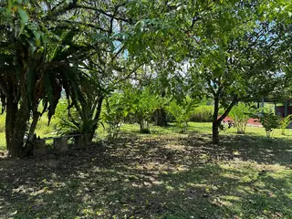
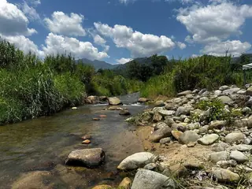
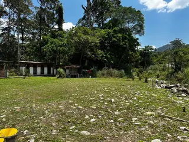

Tanah Janda Baik (Sungai & Resort)
📍 Janda Baik, Pahang · MT-0003
Jadual Data Teknikal Tanah Disemak 2026-08-31
| Keluasan | 1.64 ekar / 71,438 sqft · RM34/sqft |
|---|---|
| Pegangan (tenure) | Freehold |
| Kategori guna tanah | Pertanian |
| Zoning | Pertanian |
| Sekatan | Melayu Reserved |
| Jenis geran (individu / kongsi) | Belum ada dalam rekod — perlu diisi medan baharu |
| Syarat nyata | Belum ada dalam rekod — perlu diisi medan baharu |
| Topografi (rata / landai / berbukit) | Belum ada dalam rekod — perlu diisi medan baharu |
| Akses jalan | Belum ada dalam rekod — perlu diisi medan baharu |
| Kemudahan asas (TNB / air / telco) | Belum ada dalam rekod — perlu diisi medan baharu |
| Tanaman sedia ada | Belum ada dalam rekod — perlu diisi medan baharu |
| Status semakan | MyLOT / i-Plan — 2026-08-31 |
✅ Data di atas adalah daripada rekod sedia ada; medan bertanda "medan baharu" perlu diisi oleh pasukan Mr Tanah.
Minta pelan & geran
Penerangan
Tanah strategik 1.64 ekar di Janda Baik dengan sungai mengalir di atas tanah dan akses terus ke lot. Dilengkapi guest house dan camp site yang terselenggara baik — boleh terus beroperasi. Berhampiran Surau al-Taqwa, hanya 45km ke KLCC dan 32km ke Lebuhraya Karak. Freehold, Malay Reservation, kategori pertanian.
Sorotan
- Sungai di atas tanah
- Guest house & camp site sedia beroperasi
- Akses terus ke tanah
- Freehold - Malay Reservation
- 45km ke KLCC | 32km ke Lebuhraya Karak
- Sesuai resort & pelaburan
 Janda Baik, Pahang
Janda Baik, PahangLokasi & akses
- Surau al-Taqwaberhampiran
- KLCC45km
- Lebuhraya Karak32km
Fasa 2: peta interaktif dengan sempadan lot (polygon) yang boleh ditekan.
Kemudahan & persekitaran
- Sungai semula jadi
- Guest house & camp site sedia ada
- Akses jalan terus ke tanah
Potensi & analisis ringkas
Harga RM34/sqft bagi 1.64 ekar / 71,438 sqft dalam kawasan Janda Baik, Pahang. Pada Fasa 3, blok ini boleh memaparkan carta harga komparabel kawasan (sumber transaksi & iklan sedia ada) supaya pembeli nampak nilai sebenar sebelum berunding.
Analisis komparabel = Fasa 3 (perlu data transaksi kawasan)
Nak lihat tapak ini?
Kami boleh atur lawatan tapak dan tunjukkan sempadan lot serta akses jalan sebenar.
Mock-up: borang belum disambung ke sistem.
Soalan lazim tentang tanah ini
Apa maksud "Freehold · Open"?
Freehold = pegangan kekal; Open = tiada sekatan pemilikan (boleh dimiliki semua kaum).
Boleh bina banglo sendiri?
Kategori guna tanah Pertanian dengan zoning Pertanian. Syarat nyata dan had pembangunan perlu disemak di pihak berkuasa tempatan sebelum membina.
Macam mana nak tahu sempadan lot?
Pelan sebenar dan pelan sempadan boleh diminta melalui butang "Minta pelan & geran" — dokumen penuh dihantar terus kepada pembeli yang serius.